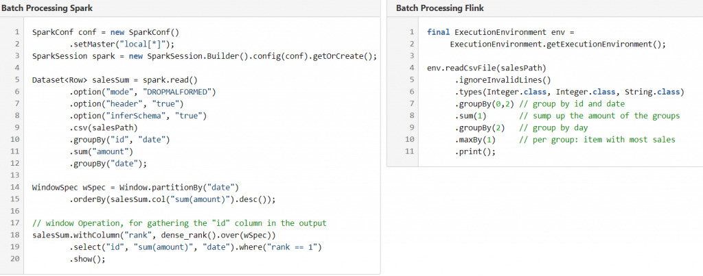

引言
Apache Flink，这个高性能大数据流处理框架，走到了成熟的一个阶段。通过与Apache Spark的测试比较，我们发现他们是竞对的技术，且是被推荐的实时分析框架。
从之前的Hadoop MR框架，大数据流处理框架在逐渐演进。在某种意义上，Spark不经大规模提升了计算性能，更重要的是允许快速、简单的构建数据分析框架，从而推广了Hadoop。
讨论到Flinke，与其竞争对手相比，其不仅是一些新兴技术，而且正在加速获得动力，并迅速向企业化推进。Flink支持流处理、批处理数据，同时集成对机器学习和图处理的支持。
但在当技术泛滥的当下，我们是否真的需要一项新的流处理技术? 目前，当下的Apache Spark已经提供了相似的特征与功能，并且最近几年已经成为一种非常流行的工具。Curt Monash对讨论的观点是：Flink基本上是德国的Spark，我认为是不必要的。因此，我们对比一下Flink与Spark的一些特点，来判断Flink是否与Spark竞争，或Flink仅仅是另一个大数据生态的泛滥工具？首先，我们比较了一下两种技术。
相同之处
它们都是Apache组织内的开源工具。每一个都是独立的解决方案，但他们通常集成到大数据环境中，例如Hadoop(YARN,HDFS,以及Kafka)。Spark和Flink都提供了相似的特征与API，例如支持SQL查询，图处理，以及批处理和流处理。
| Spark vs. Flink | Apache Flink | Apache Spark |
|---|---|---|
| SQL查询 | MRQL | Spark SQL |
| 图处理 | Spargel(base)，Gelly(library) | GraphX |
| 流处理 | Flink Streaming | Spark Streaming |
| APIs | Scala,Java,Python | Scala,Java,Python,R |
| 机器学习 | Flink ML | MLib, ML |
| Stable Version | 1.3.2 | 2.2.0 |
| 吞吐量 | 高 | 高 |
| 容错性 | Exactly-once | Exactly-once |
| 部署 | Standalone,Mesos,EC2,YARN | Standalone,Mesos,EC2,YARN |
| 数据源 | Kafka, Amazon S3, ES, Twitter, etc | Kafka, Amazon S3, ES, Twitter, etc |
下面的代码说明了他们的相似性，但不尽相同。每段代码包含了固定的元素，以及计算最高分布频次的产品。一撇就可以看出每个技术方法的高度相似性，优劣与劣势也具有平衡性。只有深入挖掘不同框架的特征，才能够识别出不同姓。在这个特殊的案例中，可以看出在Flink中的maxBy函数在Spark中没有受到支持，并且Spark需要使用窗口函数，但这类API通常具有相同的数据处理构建方式。

批处理 vs 水龙头
Flink与Spark的最大不同之处在于不同框架的计算理念不同。Spark针对批处理和流处理使用“批”的概念，而Flink是基于单纯的流方式。想想一下收集与运输水的过程： Spark处理的方式为混合大小的桶，Flink是直接按照水龙头的方式直接处理。Flink与Spark的不同之处列列举如下
| Steaming | 微“批”流 | 基于事件的流 |
| Batch Processing | 内存处理，DAG组织算子 | 流悠闲方式：”批”是有限的流 |
| 语言 | Scala | Java |
| 优化 | 全阶段代码生成与优化，DataSet查询优化执行计划。手动内存调优非常重要 | 自动化优化：根据输入、输出、算子，主动选择合适方法。C++风格的内存管理 |
| 数据重用与迭代 | DAG执行计划：每一个迭代需要调度与运行相同的数据。内存缓存与重用 | 执行引擎中迭代处理，基于圆形数据流(一个迭代，一个计划)。另外，提供了Delta迭代来处理改变部分数据 |
| 延迟性 | 批处理导致高延迟，秒级别的延迟 | 微妙级别的低延迟 |
| 有序流 | 新版本中，提供了基于事件处理的基本方式 | 基于时间线，有序流可以被很好的处理 |
| 支持 | 支持所有的hadoop分布：Cloudera, Hortonworks, etc. Databricks提供了晕平台和支持包 | 使用邮件列表或论坛 |
性能
批处理的表现性能，依赖于不同的负载。有些Benchmark的测试，显示Flink0.9.1快于Spark1.5.1。关于机器学习库这一方面，Spark的测试显示其性能更优(Flink 1.0.3 vs. Spark1.6.0)。在2016年9月份，Flink和Spark分析了一些批处理和迭代处理的测试，这些测试表明Spark在图处理方面1.7倍快于Flink,而Flink在批处理和小规模图负载方面1.5倍快于SPark，且使用更少的资源。这表明，工具直接的性能与功能大同小异。
从这些性能比较中可以得出的结论是，要选择更快的框架，必须对特定的工作负载进行基准测试。针对这些主题，几乎没有最近版本的比较(Spark 2.2 vs. Flink1.3)。这很麻烦，因为这两个平台甚至在过去一年里都取得了令人印象深刻的性能提升。在我们博客的第2部分中，我们将提供我们自己的详细性能比较，请继续关注!
结论
大数据作为不断增加的容量、对质量的高要求以及对更快的业务洞察力的需求的三重挑战，继续要求技术在任何规模的延迟和吞吐量方面保持高性能，同时允许快速开发和高质量的代码。
如果高吞吐量、低延迟和良好的容错性的数据流处理需求是开发的驱动因素，那么Flink提供了一个优秀的应用程序框架[1]。如果应用程序应该嵌入到Hadoop发行版中，比如Hortonworks或Cloudera，那么Spark将是一个更好的选择，因为它已经很好地集成到各自的平台中，并得到了供应商的支持。Flink和Spark都在不断改进，以提供更简单、更快和更智能的数据处理特性。
最终，最佳框架的决定取决于这样一个问题:“哪一个更适合我的需求?”即使是开发团队最喜欢的编程语言也可能是一个关键因素——Spark的Java API源自Scala API:这有时会导致不吸引人的Java代码。数据工程师通常更喜欢Python或Scala, Spark支持更成熟、功能更完备、速度更快的api。Spark与R的紧密集成——“数据科学的黄金之子”——在R中提供了Spark，从而很好地集成到现有的数据科学工具箱中。
引发最推崇的特性之一是速度可以，运行程序比Hadoop MapReduce快100倍在内存中,或磁盘上的快10倍。Flink在批处理方面提供了强大的竞争优势，通常具有相似的性能，并且显著降低了流处理的延迟。尽管Spark社区的“炒作”似乎转移到了Flink，但只有未来才能说明这对实际市场份额有多大影响。
本博客所有文章除特别声明外，均采用 CC BY-SA 4.0 协议 ，转载请注明出处！